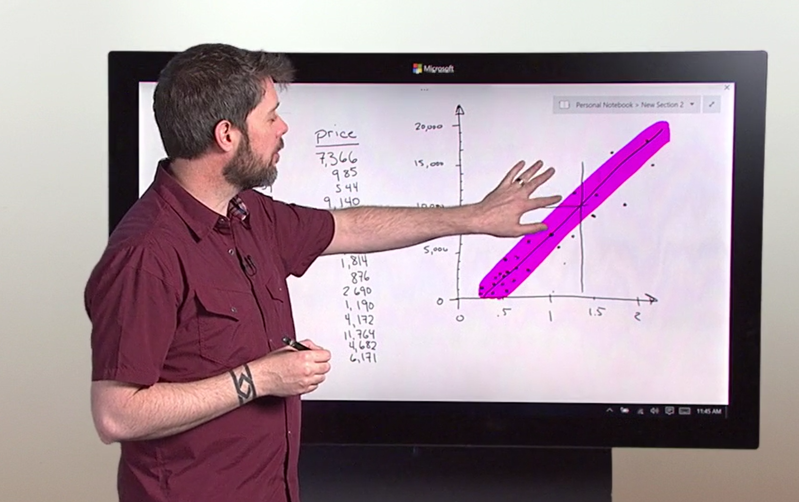
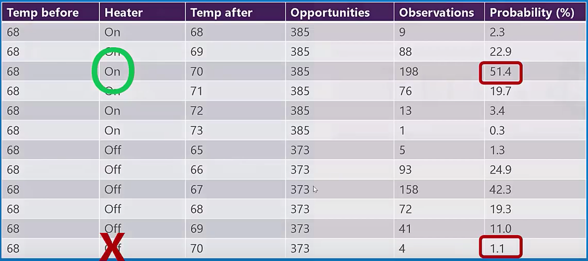

Can machine learning solve NP-Complete problems?
The short answer is “If you’re an engineer, yes. If you’re a mathematician, no.” but there’s more to it. Read more.
How to get a data science job
I get asked this question more than any other. Here's my answer in the form of an algorithm. Read more.
How to make a great remote data science team
Visibility and psychological safety are the secrets to a high performing distributed data science team. Read more.

How to choose your tools
R or Python?
Torch or TensorFlow?
Spark or MapReduce?
When we're getting started on a project or in the field, the mountain of tools to choose from can be overwhelming. Luckily, the Cheshire Cat tells us the secret of survival.
Read more.

How convolutional neural networks work [video]
It is well known that Convolutional Neural Networks are powerful. They are behind many of the deep learning successes that stud technology headlines. What is less well known is that they are actually quite easy to understand. Read more.
Becca 8 release
After months of anticipation, it's finally here. Becca 8 is officially released. It's learning better and faster than ever and is easier to integrate in your research robots. Read more.
. 
Data science for beginners video series
Five videos, five minutes each, that explain what is data science all about for those who would rather not have anything to do with math or computers. Watch the videos.

How deep learning works [video]
Most explanations of deep learning are tough to understand if you aren't fluent in math and computers, or they make it sound like magic. This is a description of deep neural networks with no fancy math and no computer jargon. Watch the video or get the slides.

How reinforcement learning works in Becca 7 [video]
Internet of Things (IoT) applications showcase all the quirkiness of the real world: noise, causality and unpredictable changes. I recently described an algorithm that overcomes these barriers, using a simple example and everyday language. Watch the video or get the slides.

How data science works [video]
Here's a math-free overview of data science in every day language. If you're looking to get started in the field, or just want to explain to your loved ones what it is you do, this may help. Read more.

How to find an algorithm that fits
Choosing a machine learning algorithm is a lot like shoe shopping. There are a lot of different types and sometimes the choice can be overwhelming. Here's a handy guide to help. Read more.

How to choose a machine learning algorithm
There are a lot of algorithms to choose from in Azure Machine Learning. To know which one to use when, you have to understand how they all work. Or you can use this cheat sheet. Read more.
Data science for the rest of us [video]
An overview of some foundational data science ideas for the math-a-phobic.
This was the inspiration for the more polished
Data Science for Beginners series.
Watch the video.
Get the slides,
pdf [4MB] or
ppt [69MB].
Danielle Dean gave
an improved version
of the talk on March 22, 2016, which I highly recommend.
How to become a data scientist
Trying to make the career switch to data science? I get asked about this a lot. Here's my best shot at advice. Read more.
Commit.
It's easy to never make a mistake. Answer questions with "It depends," and postpone decisions with "I'll consider it." You can't lose if you don't play. But you also can't win. Committing to your decisions is hard, but it is worth it. Read more.
Data science can only answer five questions
For all its usefulness, it's easy to forget that data science can only answer five types of question. Here's the short list with examples of each. Read more.
How to do good data science
Data science is wringing answers to our questions out of big collections of names and numbers. To get high quality answers, you need high quality data. Read more.
How to build a data science team
Building a team of data scientists can be overwhelming, but there's some good news: You can stop chasing after unicorns. Read more.
There is more to data science than machine learning [video]
Machine learning is cool, but it's not the whole data science story. Learn about the unsung heroes: visualization, data cleaning, feature engineering and operationalization. Watch the video.
Becca learns to catch a ball [video]
Becca helped a robot puppy learn to chase a ball around a room with realistic physics. Watch the video.